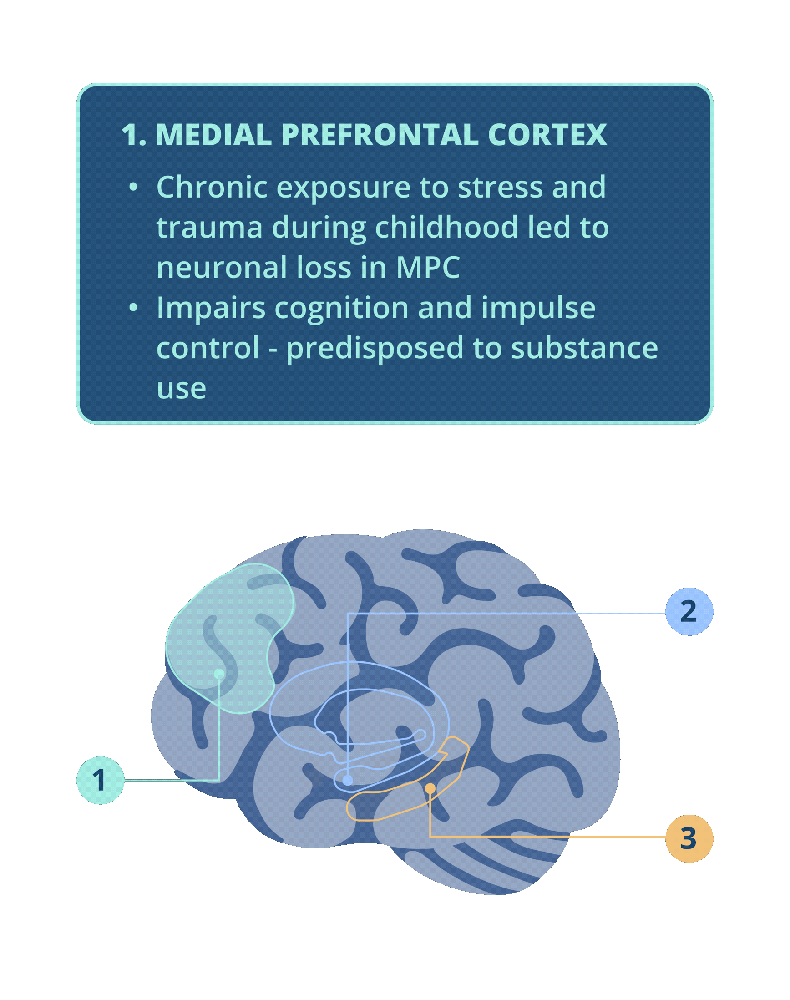

PATIENT JOURNEYS
This website aims to help you understand the neuroscience and psychology behind substance use disorders and explore various paths to recovery through the journey of Sally.
BIOMOTIVATE is a Pittsburgh based behavioral health company pioneering personalized media technologies to improve outcomes for substance use disorders and related behavioral health conditions.
Our journey map starts when Sally was 14 years old.
Sally’s life had a lot of ups and downs regarding family struggles, emotional challenges , and substance use disorders, as well as treatment and eventual recovery.

Her journey comprises five stages. For each stage, you’ll find:
A MIND PSYCHE ICEBERG:
This shows the emotions Sally experiences at each stage. Initially, negative emotions are identified and displayed. While some are known to her, most are not. As treatment progresses, more emotions become known to self, and some negative emotions turn into positive ones.
A BRAIN:
This section highlights the specific brain regions and changes associated with her experiences.
You will be able to click on any circled number for more information about the corresponding region.

A TIMELINE:
This outlines the specific events and emotions Sally encounters at each stage. Each event includes details and emotional reactions motivating Sally's journey.
If using a mobile device, click on the circle icon

to display the complete timeline.